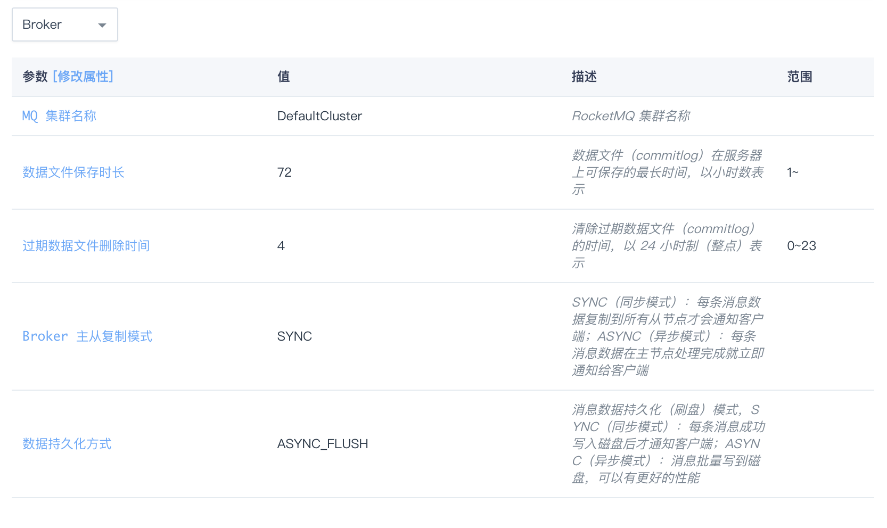

基准测试
测试结果
| 指标 | 值 | 说明 |
|---|---|---|
| CPU利用率 | ~ 90% |
4核心 |
| 内存使用率 | ~ 50% |
总内存8G |
| TPS | ~ 2000 |
测试环境
- 区域：行政服务域
- Name Server节点×1:2CPU，4G内存，性能型，Ubuntu Server 16.04.5 LTS 64bit
- Broker 节点×2（一主一从）：2CPU， 4G内存，50G硬盘，性能型，Ubuntu Server 16.04.5 LTS 64bit
- 客户端节点×2:4CPU， 8G内存，性能型，Ubuntu Server 16.04.5 LTS 64bit

参数配置
- 主从复制模式：同步复制（SYNC）
- 持久化模式：异步（ASYNC_FLUSH）
- 消息生产者JVM参数：
-server -Xms4g -Xmx4g -Xmn2g -XX:PermSize=128m -XX:MaxPermSize=320m -XX:+UseConcMarkSweepGC -XX:+UseCMSCompactAtFullCollection -XX:CMSInitiatingOccupancyFraction=70 -XX:+CMSParallelRemarkEnabled -XX:SoftRefLRUPolicyMSPerMB=0 -XX:+CMSClassUnloadingEnabled -XX:SurvivorRatio=8 -XX:+DisableExplicitGC -verbose:gc -Xloggc:/dev/shm/rmq_srv_gc.log -XX:+PrintGCDetails -XX:-OmitStackTraceInFastThrow -XX:-UseLargePages -XX:+PerfDisableSharedMem -Dorg.apache.rocketmq.client.sendSmartMsg=true

测试方法
一个客户端节点生产消息到Broker，另一个客户端节点从Broker消费消息，持续24小时。
测试代码
来自官方的benchmark代码：Producer、Consumer
截图